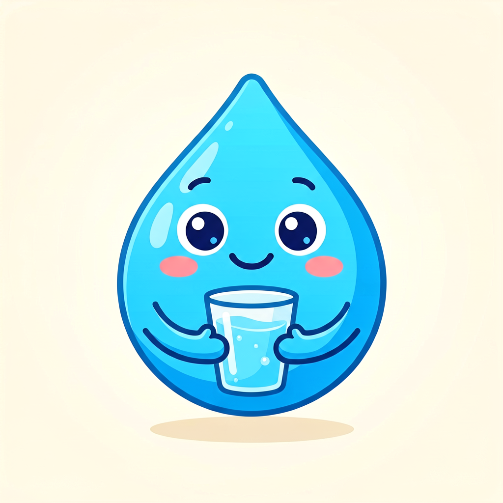
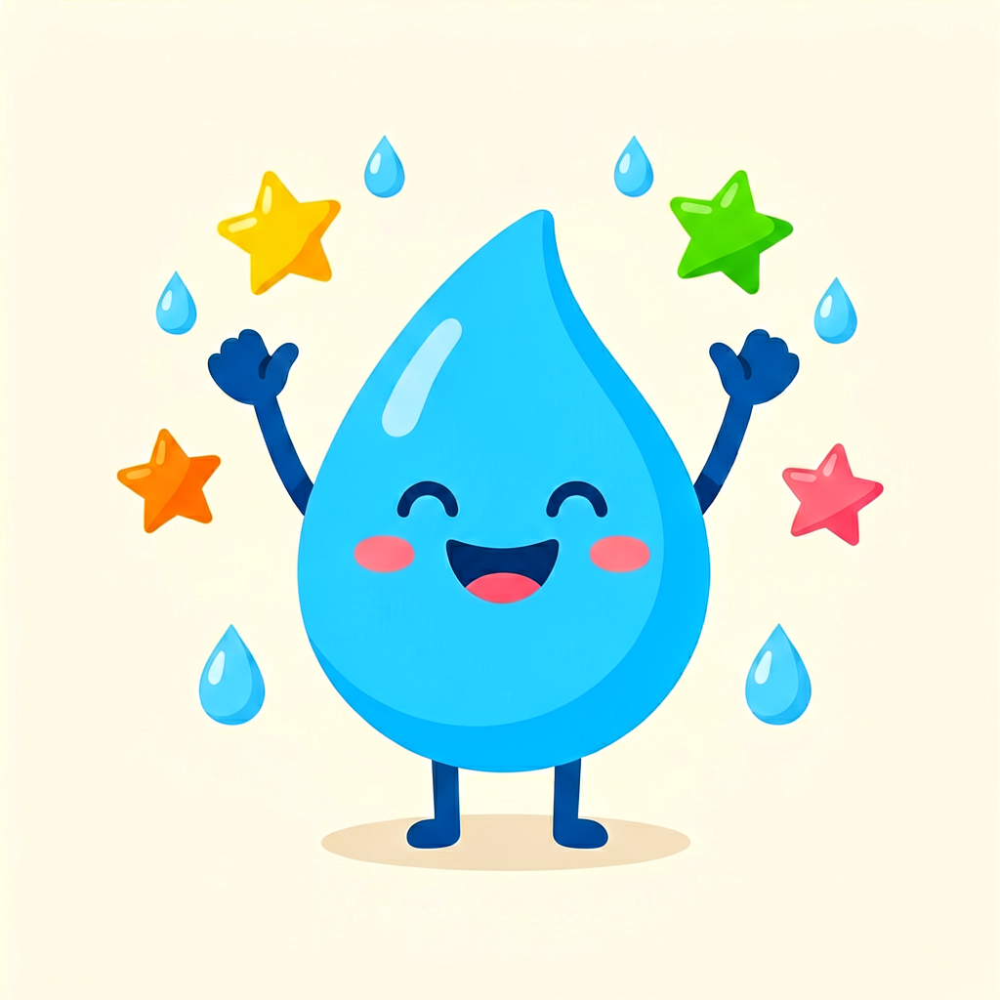

喝够标准水量 · 记录你的进步


计算逻辑：基础量 = 体重 × 30ml；运动每 30 分钟额外 +350ml； 气温 >30°C 额外 +500ml，20–30°C +250ml，15–20°C +100ml，其余不加。 结果为参考建议，运动量大、发热或特殊人群请酌情多喝。
More tools · 更多在线工具：Online PS 修图 · Mortgage 房贷计算器 · Body-fat 健身体脂计算器
通用参考，不构成医疗建议 / General reference only, not medical advice.